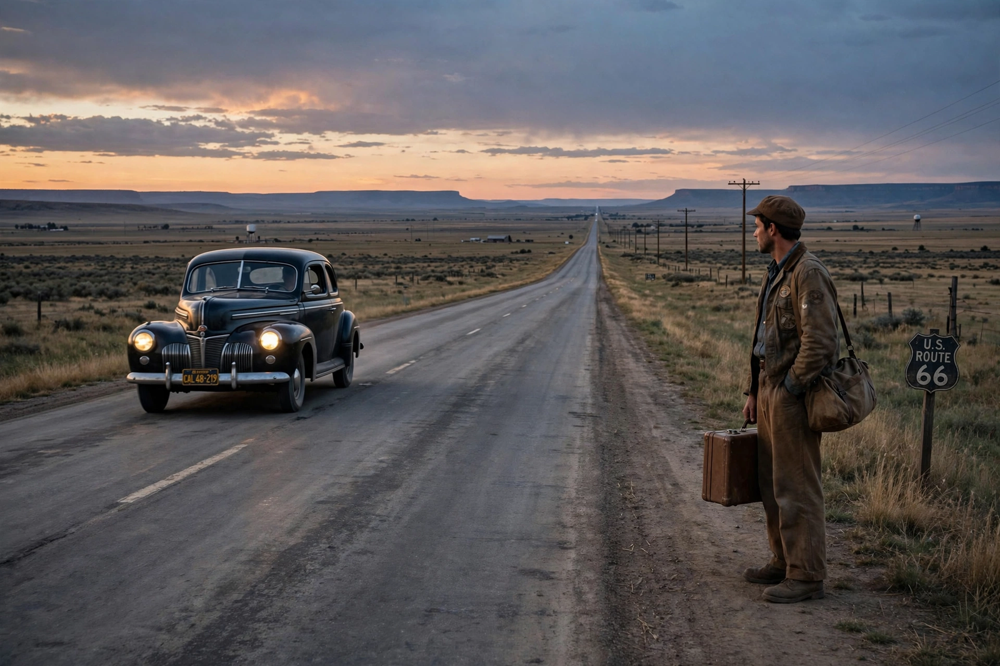

| Author | Jack Kerouac |
|---|---|
| Country | United States |
| Language | English |
| Genre | Beat novel; roman à clef |
| Publisher | Viking Press |
| Publication date | 5 September 1957 |
| Pages | 320 |
On the Road is a 1957 novel by American writer Jack Kerouac, based on the travels of Kerouac and his friends across the United States. The novel is considered a defining work of the postwar Beat and Counterculture generations, with its protagonists living a life filled with jazz, poetry, and drug use. It is a roman à clef, and many of its characters are thinly disguised versions of real members of the Beat circle.

The cross-country journeys of Sal Paradise and Dean Moriarty defined the Beat novel.
The narrator, Sal Paradise (based on Kerouac), a young writer in New York, is drawn to the charismatic ex-convict Dean Moriarty (based on Neal Cassady). Between 1947 and 1950 they criss-cross the continent — to Denver, San Francisco, New Orleans, and finally Mexico City — hitchhiking, driving, riding buses, and working odd jobs, seeking experience, jazz, and "IT", an elusive moment of pure understanding. The novel ends with Sal settled in New York, reflecting elegiacally on the vanishing American road.
Kerouac famously typed the first full draft in three weeks in April 1951 onto a single 120-foot scroll of taped-together paper — the "original scroll", sold at auction in 2001 for $2.43 million and published in unexpurgated form in 2007. After years of revision and rejection, Viking Press published the novel in 1957; Gilbert Millstein's rave review in The New York Times made Kerouac famous overnight.
The novel influenced writers, musicians and filmmakers for decades, and was adapted into a film in 2012 directed by Walter Salles. It remains one of the most widely read American novels of the twentieth century.